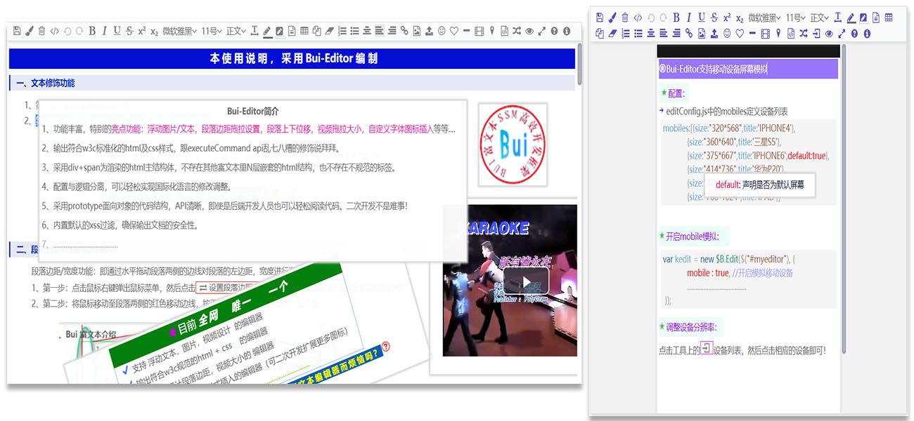
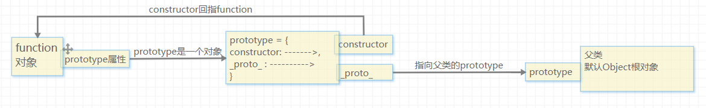
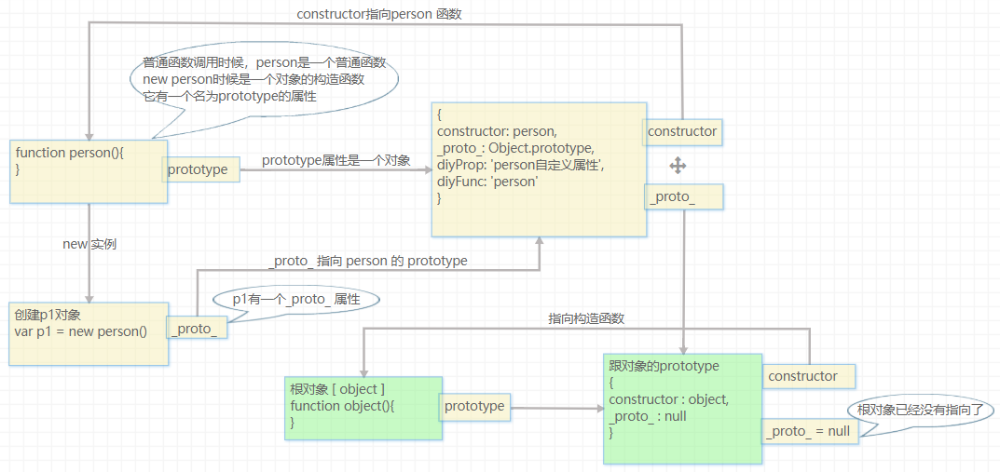
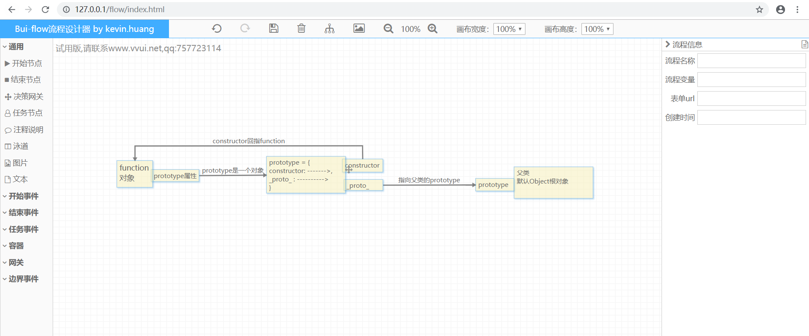

套路--先贴图
demo : http://www.vvui.net/editor/index.html
gitee : https://gitee.com/kevin-huang/Bui-Editor-public

前提
下面的内容忽略ES6。ES6多了一些特性，语法糖，硬核还是内在的经典，本文只讲经典。
吐槽JavaScript 的非主流特性
JavaScript的非主流特点让许多习惯了JAVA、c#等这些现代面向对象风格语言的码农们甚是烦恼。这种怪异的特点，加上天马行空的作用域特性，让人有种爱不起的感觉。不得不吐槽几点：
1. function 是一个双面人： 当普通调用时候它是一个函数，当new创建对象时候它是一个构造函数。
2. JavaScript没有显式的class定义，更没有像java、c#那样的继承设计。
3. JavaScript的作用域很奇怪，没有块级作用域的实现，不能像java、c#那样定义一个class，你要时刻记得你的操作是否会存在变量污染的问题。
论JavaScript的 OOP实现
吐槽了JavaScript非主流的特性，我们回到OOP这个经典问题上：封装、继承、多态。下面就三个特性的问题论论Javascript如何通过拐弯抹角的方式实现OOP的。
问题1、没有class，JavaScript是怎么做封装的？
我们都知道java或者c#里面，我们通常利用class来做封装，将一组属性、函数封装在一类里面，类的成员可以定义为私有、公有。
而然，JavaScript压根没有class这个设计，那怎么做封装呢？怎么定义类成员？对于这个问题，function这个一等公民的身份特性就派上用场了。
1）function是JavaScript里的一等公民，它的权利比较大，在它里面定义的变量(var 声明)，仅限fuction内使用。嘿嘿，利用这个特性，funciton可以模拟class，满足局部作用域的要求。
2）function不仅解决了局部作用域的问题，它还可以在new的时候，摇身一变转为构造函数。不要问我为什么，它天生如此。
3）function解决了class里面的构造函数，局部作用域问题，那成员变量怎么定义解决呢？
4）关于成员变量，一是可以定义在function的prototype属性对象上，二可以定义在function运行时的this上下文对象上。
5）关于私有,公有。严格来说，JavaScript的function封装，没法实现私有、公有。无论是定义在prototype的成员，或者this上下文上的成员，外部均可以访问。
6）通常定义在prototype上的成员称为公有(即所有实列都共享这些成员)，定义在this对象上的成员称为私有，这个私有表示每一个实例都有一个副本，不是共享的。
总结：
JavaScript利用functon这个一等公民来实现类的封装。
问题2、没有extend，JavaScript是怎么做继承的？
* 问题1中提到的“function”是JavaScript世界里面的一等公民。权利很大。这不！Javascript的继承还得靠这个一等公民。那这个一等公民有啥特性可以模拟java的extend继承呢？
* 大凡想拿JavaScript装装B的人，经常会拿“原型继承链”这个高深词吓唬吓唬小白。看上去这玩儿好像就是JavaScript继承的机制。通俗地说：“继承啊，还得看function这个一等公民”。
* 继承看“function”，准确来说是看function的prototype(原型)。这个prototype是function隐含的一个属性，这个属性是一个对象，你可以理解为 function.prototype = {} 。
* function里的prototype可以实现继承？那要看看这个prototype里面都有什么了。prototype里面有两个很重要的属性：constructor 、_proto_。其中_proto_是继承的关键，它会指向父类的prototype。
* 在贴出更复杂的关系图前，先看看function、prototype、_proto_三者简单的关系图：
关系解析：funciton里面有一个prototype，prototype指向一个对象，该对象里有两个属性:constructor,_prop_。constructor回指function，_prop_指向父类的prototype。

* 阅读至此，你应该明白了，继承的关键是 function里的prototype及prototype里面的_prop_，_prop_是通向父亲大人的路径。
* 懂得了关键还不行，要理解一下当你访问对象的一个成员时候，JavaScript是怎么找到这个成员给你的（暂时称之为 继承链查询机制）。
比如你访问了 myIns.name(myIns是new funciton产生的实例)，js会这样查询你要访问的成员。
（1）js会先找this里面是否有name属性，有则直接返回。
（2）this里面没有name，则找myIns._proto_（这个_proto_实际上指向了function.prototype）里面是否有该属性，有则直接返回。
（3）function.prototype里面也没有找到name属性，则找 function.prototype._proto_指向的父类里面是否存在这个name。
总结：
JavaScript的继承是利用function的prototype(原型)、prototype._proto_(原型里面的父类指引) 实现的。
继承还依赖JavaScript成员访问的链式查询机制：先查自己有没有，没有则查原型prototype里的，prototype里也没有则进一步查_proto_指向的父类。
继承链查询机制：我称之为“就近原则”！
最后：贴个稍稍复杂的继承链图解

问题3、没有override，JavaScript是怎么做多态重写？
多态，严格来说，JavaScript没有明确的多态重写实现，但是可以借助JavaScript动态语言特性，继承链成员查询机制，达到模拟多态重写的实现。
1）重写实现：利用JavaScript的继承链查询机制（就近原则），在this、prototype上定义同名的成员，可以达到类似于java里的重写机制。
2）重载实现：重载即同一个函数名，多种参数组合。对于这个问题可以利用function内部arguments，在函数内部通过对argumnets数量，类型的判断达到重载目的。
3）JavaScript具有灵活的动态成员功能，即你可以在运行时删除，新增一个成员。利用这个特性，可以实现java类似于java的反射动态成员的功能。
OOP与Jquery双剑合璧让经典永驻
前面说了一大堆JavaScript如何实现OOP。脱离了Dom谈JavaScript就犹如纸上谈兵。将OOP结合Dom一起实现前端组件的开发才是实战，这也是Bui、Bui-editor、Bui-flow具体的OOP组件思路。
特别地，我认为利用JavaScript经典OOP（也可以用es6的oop）配上jquery操作dom，是开发前端UI组件的经典大杀器，清晰的封装，面向对象的特性，大大提高代码的质量，组件的扩展度。
下面以一个简单的按钮组件例子展示Bui、Bui-editor、Bui-flow的OOP组件思路。
1、定义按钮组件的容器Div
<div id="toolbar"></div>
2、定义JavaScript的Button对象
<script>
/**定义button类的构造函数**/
function Button(jq,opts){
this.opts = opts;
this.jqObj = jq;
this.button = $("<button>按钮</button>").appendTo(this.jqObj);
this._bindEvents();
}
/**
* 定义Button的成员
* ***/
Button.prototype = {
constructor:Button,
/**定义一个点击事件**/
click:function(){
this.button.trigger("click");
},
/**绑定button的事件**/
_bindEvents:function(){
var _this = this;
this.button.on({
click:function(){
if(_this.opts.onClick){
_this.opts.onClick.call(this);
}
alert("click");
}
});
}
};
</script>
3、使用组件
/**
* 创建一个Button实例
* **/
var btn = new Button($("#toolbar"),{
onClick:function(){
alert("按钮被触发");
}
});
/**调用实例api**/
btn.click();
最后：
贴一个我正在开发的流程设计器，你可以关注的我 gitee https://gitee.com/kevin-huang
